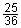

François Vieta
1540 - 13.12.1603, Paris
François Vieta (auch Viète) arbeitete als Jurist und Advokat, unter anderem auch für die französischen Könige
Heinrich III. und Heinrich IV. Für sie entzifferte er abgefangene verschlüsselte Botschaften von politischen Gegnern.
Vieta lebte in einer Zeit von grossen religiösen Kämpfen zwischen Katholiken und den protestantischen Hugenotten.
Eigentlich war die Mathematik für ihn nur ein Hobby, aber trotzdem war er einer der wichtigsten und einflussreichsten
Mathematiker. Er führte 1591 das Rechnen mit (grossen lateinischen) Buchstaben ein und benützte systematisch Symbole für
Rechenoperationen, wie zum Beispiel das + und - Zeichen, die bis dahin nur mit Wörtern ausgedrückt worden waren.
Unsere heutige Schreibweise ist grösstenteils auf ihn zurückzuführen.
Der Satz von Vieta (bzw. seine Umkehrung) führt insbesondere bei ganzzahligen Lösungen schneller zur Lösung einer quadratischen Gleichung als die Lösungsformel:
Satz: Ist x2 + px + q = 0 und sind x1 und x2 Lösungen der Gleichung, so gilt:
x1 + x2 = -p und x1 · x2 = q.
Umkehrung: Sind x1 und x2 Lösungen der Gleichung x2 + px + q = 0, so
gilt für alle x:
x2 + px + q = ( x - x1)(x - x2) → Zerlegung in
Linearfaktoren.
Gibt es also keine reellen Lösungen der quadratischen Gleichung, so existiert (in der reellen Zahlenmenge) auch keine
Zerlegung des dazugehörigen quadratischen Terms in Linearfaktoren.
Beispiele:
1) Zerlege den Term 36x2 - 61x + 25 in Linearfaktoren.
Übergang zur Gleichung 36x2 - 61x + 25 = 0. Ihre Lösungen lauten x1 = 1 und
x2 = .
Daher ist 36x2 - 61x + 25 = 36(x - 1)(x - )
= (x - 1)(36x - 25).
2) Zerlege den Term x2 + x + 1 in Linearfaktoren.
Die dazugehörige Gleichung x2 + x + 1 = 0 hat Diskriminante D = 1 - 4 = -3 < 0, besitzt also in der Menge
der reellen Zahlen keine Lösung.
Der Term x2 + x + 1 lässt sich daher in der Menge der reellen Zahlen nicht in Linearfaktoren zerlegen.